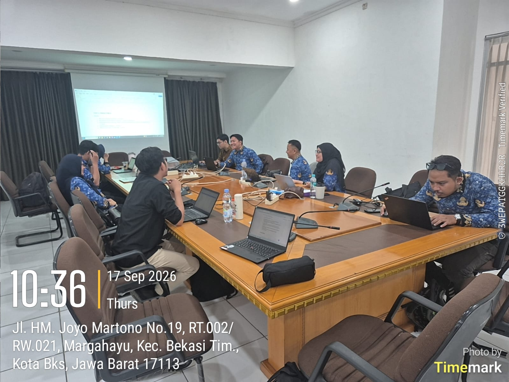
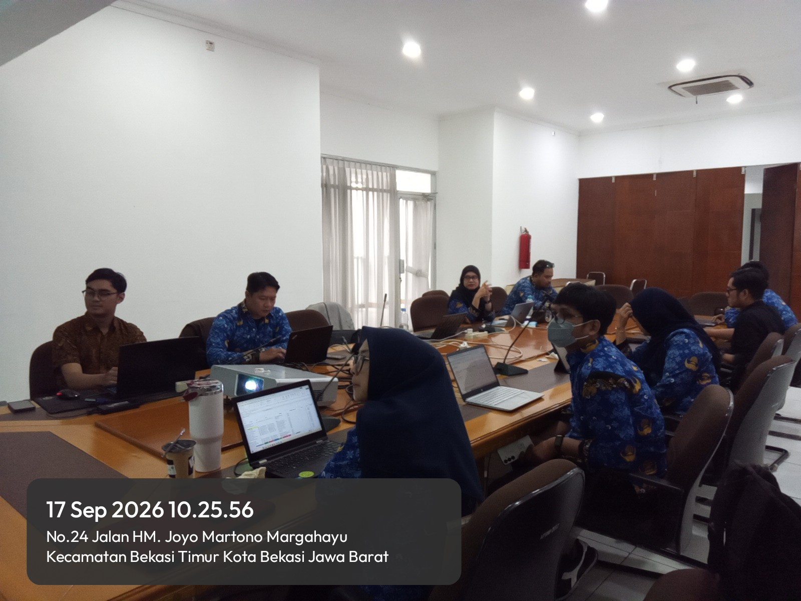
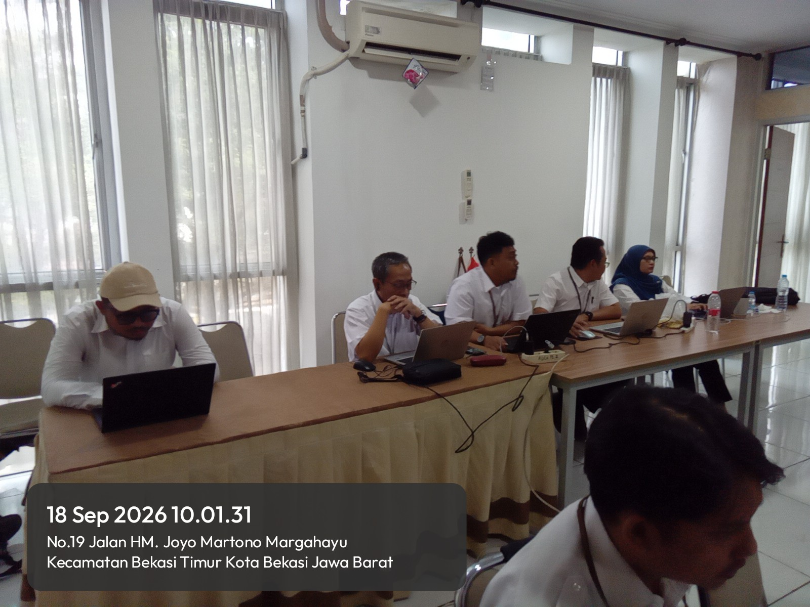
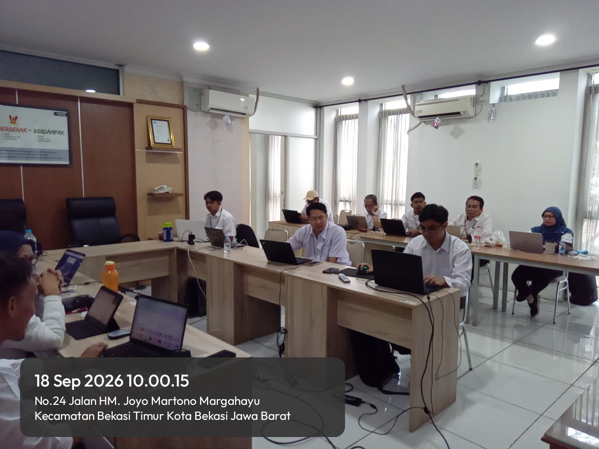
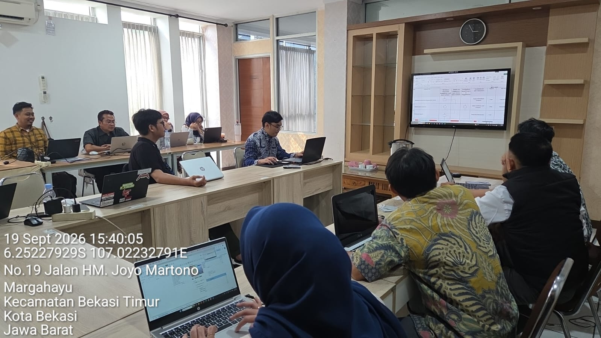
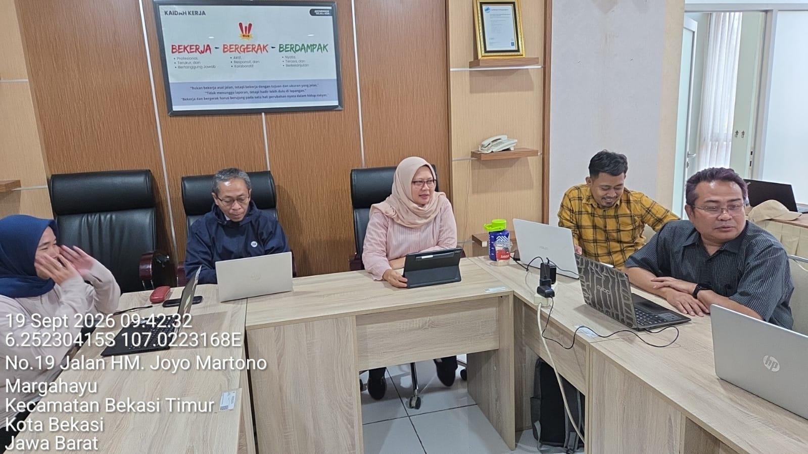

Dokumentasi pelaksanaan kegiatan
Foto-foto kegiatan rapat dalam pelaksanaan program.
Rapat 17 September 2023


Rapat 18 September 2023


Rapat 19 September 2023


Foto-foto kegiatan rapat dalam pelaksanaan program.





